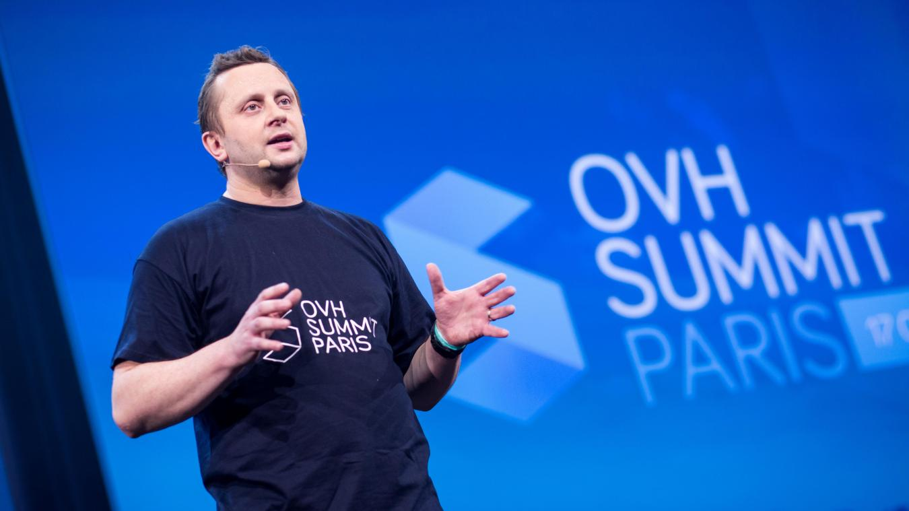

Foundation and beginning
1999 - 2005OVH was founded in Roubaix by Octave Klaba, an engineer of Polish origin, with the idea of providing low-cost web hosting solutions. The company stood out from the beginning by manufacturing its own servers, allowing it to significantly reduce costs and offer competitive prices. OVH began to grow in France and then across Europe, with a strong increase in its customer base.
